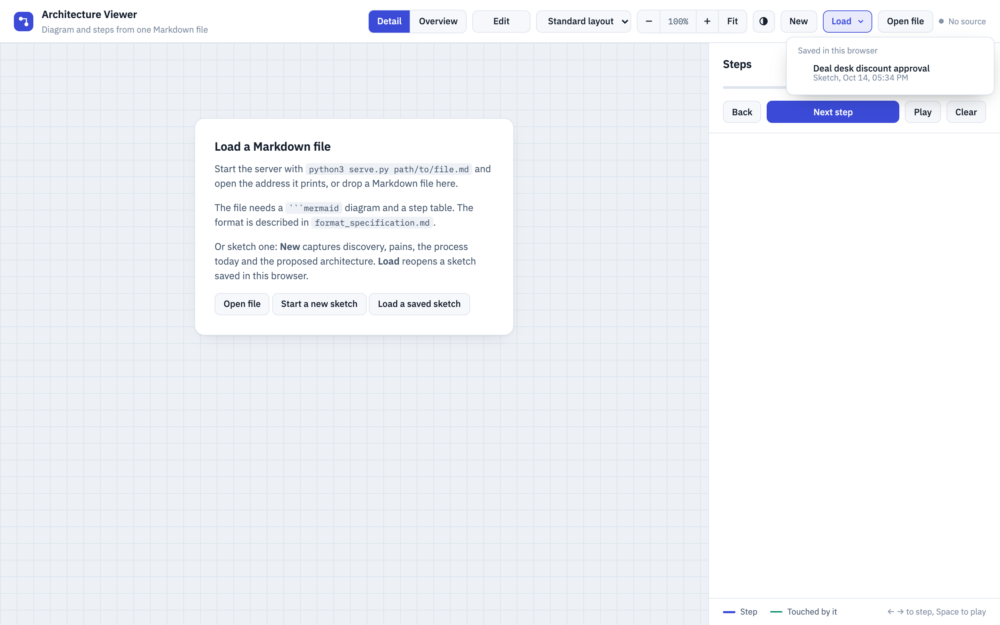
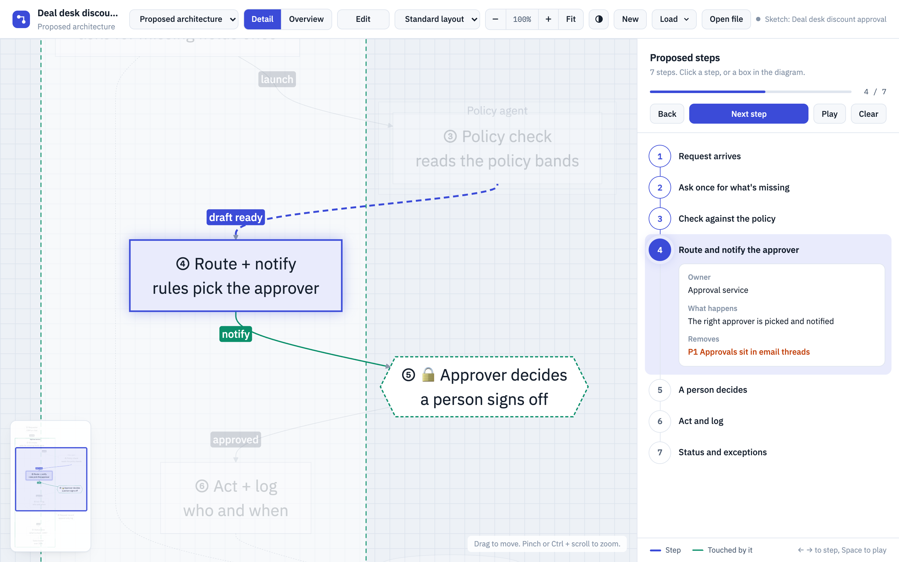
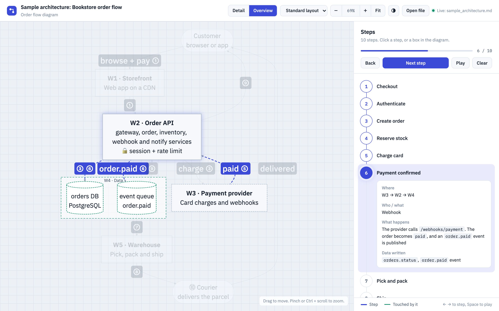
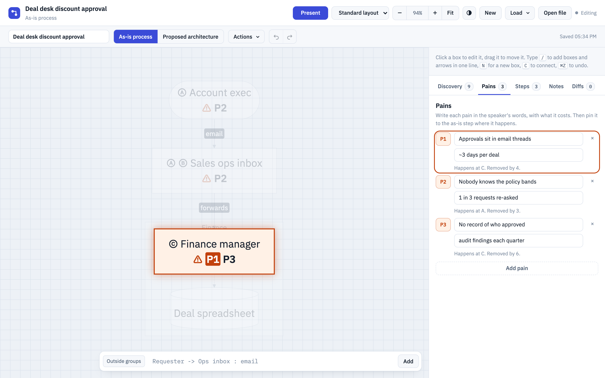
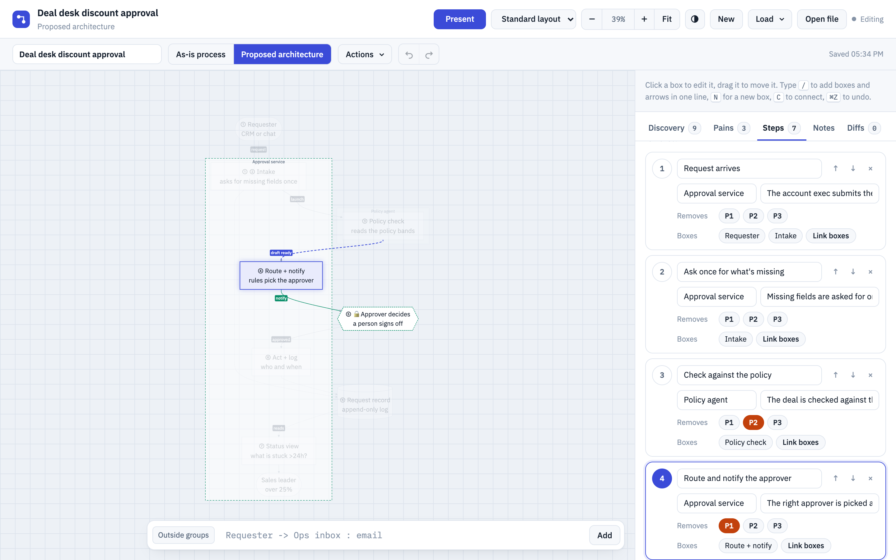

What it is for
A browser tool for solutions architects. Run a guided technical discovery, map a process as it runs today with its pains, design the proposed architecture that removes them, and present both, step by step. Everything lives in one Markdown file that people and AI agents can read, write and version.
| Stage | What the tool gives you |
|---|---|
| 1. Discover | A structured discovery form: use case, current process, pains, quantification, blockers, definition of success, decision process, rollout and open questions. |
| 2. Map the process today | An As-is process board: people, systems and handoffs, steps with who, tool and wait time, and each pain (P1, P2 …) pinned to the step where it happens. |
| 3. Architect the solution | A Proposed architecture board: components grouped by system, 🔒 human gates where a person decides, an owner per step, and the pains each step removes. |
| 4. Present and hand over | Present walks through either board step by step, or as an Overview with one box per group. Export .md writes everything into one Markdown file. |
| 5. Let an AI agent draft it | Give a discovery call transcript to the process-to-sketch skill in Cursor or Claude Code. It asks which software stack to prefer, researches it in the official documentation, and drafts stages 1-3. See Working with an AI agent. |
It also presents existing architecture documents: any Markdown file with a Mermaid flowchart and a step table can be walked through, and edited as a copy.
serve.py binds to localhost only. Use public or synthesized data in shared sessions.Getting started
With the local server (recommended)
From the architecture_viewer folder:
python3 serve.py sample_sketch.md --open # a process sketch: discovery, pains, both boards
python3 serve.py sample_architecture.md --open # an architecture walkthrough
python3 serve.py path/to/other.md --port 8001 --openThe server shows that one file and reloads the page within about 2 seconds whenever the file changes, so you can watch an AI agent or an editor write it. It needs Python 3.10+ and nothing else.
Without a server
Open index.html in a browser. Then use New, Load or Open file, or drop a Markdown file onto the page. There is no live reload in that case.
The three ways in
- Start a new sketch (or New in the top bar) opens an empty sketch in Edit mode.
- Load a saved sketch (or Load ▾) lists the sketches saved in this browser, newest first.
- Open file opens a Markdown file. In Present mode it is shown; in Edit mode it is edited.

The page loads Mermaid and its fonts from the internet (cdn.jsdelivr.net, Google Fonts), so it needs a connection.
Present mode
Present walks through a diagram and its steps. It works for sketches and for any Markdown file in the viewer's format.
Steps
- Click a step in the sidebar, press ← →, or press Space to play (3 seconds per step). The view zooms to the step and highlights its boxes and arrows in blue, and what they touch in green.
- Click a box or a group in the diagram to list every step that uses it. Click a step there to jump to it.
- Esc or a click on empty canvas clears the highlight.
- Several diagrams, for example As-is process and Proposed architecture: the picker in the top bar switches between them, each with its own steps.
- In a sketch, the step details show the step's pains, or the pains it removes, in orange.

Detail and Overview
- Detail shows every box and arrow.
- Overview (O) collapses each top-level group into one box and merges the arrows between groups, for the big picture. Steps still work: the view zooms to the groups the step touches.
- On a group in the Overview, Show in detail switches back and zooms to that group.

Moving around
- Drag or scroll to move the diagram. Pinch or Ctrl/⌘ + scroll to zoom at the pointer. + − zoom around the centre.
- Fit (F) shows the whole diagram.
- The minimap in the corner shows where you are. Click or drag in it to move.
- Compact layout (dropdown in the top bar) uses Mermaid's ELK engine: a smaller diagram with right-angled arrows. The choice is remembered per browser.
- The half-moon button switches light and dark.
Edit mode
One button in the top bar switches between Edit and Present. In Edit mode, the second bar holds the sketch name, the board picker (As-is process / Proposed architecture), the Actions menu and undo/redo.
What Edit opens
- A file shown in the viewer: Edit opens a copy. Each diagram with a step table becomes a board. The file on disk is never changed. Its export puts your edits back into the file's text in place, and keeps every line you didn't touch.
- A file exported from Edit mode (or written by the AI agent skill): Edit reopens the sketch stored in it, with discovery, pains, owners and the diff log. If the browser has newer changes to it, or the file was changed by hand, you choose which version to keep.
- New starts an empty sketch. Load continues a saved one.
Discovery and pains
- Discovery tab: a form in collapsible sections (use case, current process, pains, quantification, blockers and risks, definition of success, decision process, rollout plan, open questions). Each section shows how many of its fields are filled. Fill it in as you ask.
- Pains tab: P1, P2 … in the speaker's words, with what each one costs. Each pain shows where it happens and which proposed step removes it.
- Click a pain to highlight the boxes where it happens, in orange. Click it again, click the canvas, or press Esc to clear.

Drawing
Mermaid lays out the boxes. You can add them in three ways:
Requester -> Ops inbox : email.| Quick-add syntax | Result |
|---|---|
A -> B : label | Both boxes and a labelled arrow |
A -> B -> C | A chain of boxes |
A ..> B | A dashed arrow |
[Finance] A -> B | New boxes go into the group Finance |
person: store: decision: gate: | In front of a name: sets the shape (person, system of record, decision, 🔒 human gate) |
- Click a box to edit its name, further lines, shape, group and arrows in the sidebar. Double-click or Enter to rename. Delete removes it.
- Drag a box to move it, or a group by its title. A moved box is pinned. Actions → Reset positions hands the layout back to Mermaid.
- Actions → Layout sets the board's direction. Auto picks left-to-right or top-down, whichever fits the screen.
- In Edit mode the scroll wheel zooms at the pointer.
Steps and linking
- The Steps tab shows the steps of the board that's open. As-is steps (Ⓐ Ⓑ Ⓒ) have who, tool, wait and the pains that happen there. Proposed steps (① ② ③) have an owner, what happens, and the pains they remove.
- Link boxes: while it's on, click boxes and arrows (or arrow labels) to link them to the step, and click again to unlink. A linked box shows the step key in its label.
- A step highlights its linked boxes, the arrows between them, and its linked arrows. Link an arrow when it should light up with the step.
- Tag a pain on an as-is step and its box shows ⚠ P1.
Proposed architecture
- Switch to Proposed architecture in the second bar. Each board has its own diagram and steps; Discovery and Pains are shared.
- On an empty board, Start from the standard pattern fills in front door, intake, agent work, routing, a human gate, act and log, and status. Rename the boxes and groups to fit.
- The Pain check below the steps lists pains no step removes yet, and steps that remove none. Its scorecard holds a pilot measure per pain.

Diffs and undo
- ⌘Z / ⇧⌘Z undo and redo up to 50 changes.
- The Diffs tab lists every change in plain words, newest first. Select an entry to preview that state, read-only. Restore this state makes it current (and can itself be undone). Back to now or Esc leaves the preview.
- The Notes tab is free text.
Saving and export
- Every change is saved in the browser within a second and survives reloads. Each sketch is its own entry, and a second tab takes over newer changes instead of overwriting them.
- Each address (
127.0.0.1:8000,localhost:8000, another port) has its own saved sketches. Clearing site data deletes them. - Actions → Export .md downloads everything as one Markdown file: discovery, pains, one diagram and step table per board, the pain scorecard, a Diffs section, and the sketch itself in an HTML comment, so Edit brings it all back. This file is your backup.
- Actions → Copy Markdown puts the same text on the clipboard.
- Actions → Delete this sketch removes it from the browser, after a confirmation.
Working with an AI agent
The process-to-sketch skill in agent_skill_for_SA_tool/ lets Cursor or Claude Code turn a business workflow description or a discovery meeting transcript into a complete process sketch for this viewer, with a proposed architecture on the software stack you choose.
How it works
- You start the agent in the
agent_skill_for_SA_tool/folder and point it at a transcript or description. - It asks which software stack to prefer, unless your prompt already names one, and waits for your answer. It also asks what is ruled out and whether you have documentation links.
- It creates a new project with
scripts/new_project.py:projects/<slug>-<timestamp>/. Every run gets its own directory, so runs and stacks can be compared side by side. - It researches the stack in its official documentation: the vendor's docs, API reference, pricing and limits pages. It writes what it found, with source links, to
stack-notes.md, and maps the products onto the roles of the pattern: front door, orchestrator, worker, system of record, review surface, release target. Capabilities the docs don't confirm are markedASSUMED. - It drafts the sketch: discovery answers and pains in the customer's words, the as-is board with every handoff and wait, and the proposed board built only from the researched components, with 🔒 gates wherever a person decides.
- It validates the file with
scripts/check_sketch.pyand fixes errors until it printsOK. - It reports back: the stack used, the paths, the number of pains, steps and gates, and everything it assumed.
Cursor
- Open
agent_skill_for_SA_tool/as the workspace, so Cursor picks up.cursor/rules/and.cursor/skills/. - In the Agent chat, ask:
Use the process-to-sketch skill on process_description_transcript.md.or name the stack right away:Use the process-to-sketch skill on process_description_transcript.md. Prefer the Mapbox stack.
- The research step uses web search. You can also add the vendor's documentation to Cursor as a doc (
@Docs) and mention it in the prompt.
Claude Code
- Start it in the skill folder, so it loads
CLAUDE.md, the skill and the script permissions:cd architecture_viewer/agent_skill_for_SA_tool && claude - Ask in plain words, or call the skill by name:
/process-to-sketch process_description_transcript.md, prefer AWS Step Functions, Lambda and S3
- On the first start, approve the
@imports inCLAUDE.mdand the project settings. Approve the web searches and fetches of the research step when asked.
Choosing the stack
The skill is stack-agnostic. You decide what the proposed architecture is built from; the agent never picks a stack on its own. Good answers to its question name products, not only vendors, and say what's off limits:
- Answer "you choose" and the agent proposes one or two stacks with a reason each, then waits for your pick.
- If a role can't be filled from your stack, the agent may add another product, but says so in its report and in the open questions.
- Without web access, the agent asks you for the documentation pages instead of designing from memory.
agent_skill_for_SA_tool_grok_stack/.Reviewing the draft in the viewer
Open the result from the skill folder; the page reloads whenever the agent changes the file:
python3 ../serve.py projects/<id>/<slug>.md --open- Present: walk both boards. As-is steps (Ⓐ …) show the ⚠ pain tags; proposed steps (① …) show owners and the pains they remove.
- Overview (O): one box per environment of the chosen stack (
E1 · <product>,E2 · <product>…) plus Existing systems. A quick check that the architecture is right at a glance. - Edit: opens the sketch with discovery, pains and owners filled in. Refine it live with the customer, then Export .md.
- Read
stack-notes.mdnext to the sketch: every component should have an official source, and everyASSUMEDitem is an open question for the customer or the vendor.
stack-notes.md, before you show it to a customer.Updating a sketch
- Name the project to change an existing sketch, for example "Update projects/acme-hiring-20261018-101500/ and add a reference check step". The agent edits that file and keeps its id, so the viewer updates the stored sketch instead of opening a second one.
- Ask for a different stack and the agent researches it again and updates
stack-notes.md. - Without a project name, every run creates a new project.
Other agents, and files of your own
- Other assistants (Codex, Copilot, Windsurf …): give them the three files in
.cursor/rules/as standing instructions and ask them to followskills/process-to-sketch/SKILL.md. - A chat model without file access: paste in the transcript,
SKILL.md,architecture-pattern.md,stack-research.md,sketch-template.mdand section 8 of the format spec, then run the two scripts yourself. - Architecture walkthroughs instead of process sketches: any agent can write a Mermaid flowchart plus a step table by following sections 1-7 of
format_specification.md.
Keyboard shortcuts
| Key | Present mode |
|---|---|
| → ↓ / ← ↑ | Next / previous step |
| Space | Play or pause (3 s per step) |
| Esc | Clear the highlight |
| O | Switch between Detail and Overview |
| F | Fit the whole diagram |
| + / − | Zoom in or out |
| ? | Open this guide |
| Key | Edit mode |
|---|---|
| / | Jump to the quick-add bar |
| N | New box, in the last shape you picked |
| G | New group |
| C | Connect two boxes |
| Enter | Rename the selected box |
| Delete | Delete the selected box or group |
| F | Fit the whole board |
| Esc | Leave a Diffs preview, cancel connecting or linking, then clear the selection |
| ⌘Z / ⇧⌘Z | Undo / redo |
Files and format
| File | Purpose |
|---|---|
index.html | The whole app: Edit mode and Present mode |
guide.html | This guide |
serve.py | Local server for the page, this guide and one Markdown file, with live reload |
format_specification.md | How to write a compatible file, for people and AI agents: walkthroughs (sections 1-7) and process sketches (section 8), with a checklist (section 10) |
sample_sketch.md | A process sketch (deal desk discount approval, synthesized) |
sample_architecture.md | An architecture walkthrough (fictional bookstore order flow) |
agent_skill_for_SA_tool/ | The process-to-sketch skill for Cursor and Claude Code, with its validator and a sample transcript |
In one sentence: a file holds a Mermaid flowchart and a Markdown step table. Each row has a short step key (①, Ⓐ, 3a), and the same key appears in the labels of the boxes that belong to that step. A process sketch adds discovery, pains and the sketch as JSON in an HTML comment.